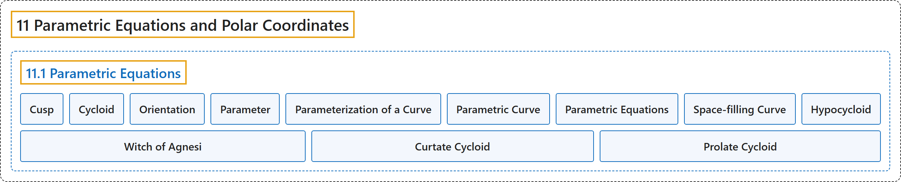

11.1 Parametric Equations
Classification

Glossary
| Term | Definition | 中文翻译 | Source |
|---|---|---|---|
| 11 Parametric Equations and Polar Coordinates 参数方程与极坐标 |
(No definition) | （无定义） | Strang & Herman, 2016b, chapter 7 |
| 11.1 Parametric Equations 参数方程 |
(No definition) | （无定义） | Strang & Herman, 2016b, section 7.1 |
| Cusp 尖点 |
"a pointed end or part where two curves meet" | 两条曲线相交处的尖端或尖部 | Strang & Herman, 2016b, chapter 7 Key Terms |
| Cycloid 摆线 |
"the curve traced by a point on the rim of a circular wheel as the wheel rolls along a straight line without slippage" | 车轮沿直线无滑动滚动时，圆形车轮边缘上一点描出的曲线 | Strang & Herman, 2016b, chapter 7 Key Terms |
| Orientation 方向 |
"the direction that a point moves on a graph as the parameter increases" | 参数增大时一点在图像上移动的方向 | Strang & Herman, 2016b, chapter 7 Key Terms |
| Parameter 参数 |
"an independent variable that both x and y depend on in a parametric curve; usually represented by the variable t" | 参数曲线中 x 和 y 都依赖的自变量；通常用变量 t 表示 | Strang & Herman, 2016b, chapter 7 Key Terms |
| Parameterization of a Curve 曲线的参数化 |
"rewriting the equation of a curve defined by a function \(y=f(x)\) as parametric equations" | 把由函数 \(y=f(x)\) 定义的曲线方程改写为参数方程 | Strang & Herman, 2016b, chapter 7 Key Terms |
| Parametric Curve 参数曲线 |
"the graph of the parametric equations \(x(t)\) and \(y(t)\) over an interval \(a\le t\le b\) combined with the equations" | 参数方程 \(x(t)\) 和 \(y(t)\) 在区间 \(a\le t\le b\) 上的图像，连同这些方程 | Strang & Herman, 2016b, chapter 7 Key Terms |
| Parametric Equations 参数方程 |
"the equations \(x=x(t)\) and \(y=y(t)\) that define a parametric curve" | 定义参数曲线的方程 \(x=x(t)\) 和 \(y=y(t)\) | Strang & Herman, 2016b, chapter 7 Key Terms |
| Space-filling Curve 空间填充曲线 |
"a curve that completely occupies a two-dimensional subset of the real plane" | 完全占满实平面某个二维子集的曲线 | Strang & Herman, 2016b, chapter 7 Key Terms |
| Hypocycloid 内摆线 |
"A point on the edge of the green circle traces out the red graph, which is called a hypocycloid." | 绿色圆边缘上的一点描出红色图像，这条曲线称为内摆线。 | Strang & Herman, 2016b, section 7.1 |
| Witch of Agnesi 阿涅西箕舌线 |
"However, perhaps the strangest name for a curve is the witch of Agnesi." | 不过，曲线中最奇怪的名字或许是阿涅西箕舌线。 | Strang & Herman, 2016b, section 7.1 |
| Curtate Cycloid 短辐摆线 |
"The new path has less up-and-down motion and is called a curtate cycloid (Figure 7.14)." | 新路径的上下起伏较小，称为短辐摆线（图 7.14）。 | Strang & Herman, 2016b, section 7.1 |
| Prolate Cycloid 长辐摆线 |
"When the distance from the center of the wheel to the ant is greater than the radius of the wheel, his path of motion is called a prolate cycloid." | 当车轮中心到蚂蚁的距离大于车轮半径时，它的运动路径称为长辐摆线。 | Strang & Herman, 2016b, section 7.1 |
References
Strang, G., & Herman, E. (2016b). Calculus volume 2. OpenStax. Retrieved October 29, 2026, from https://openstax.org/details/books/calculus-volume-2